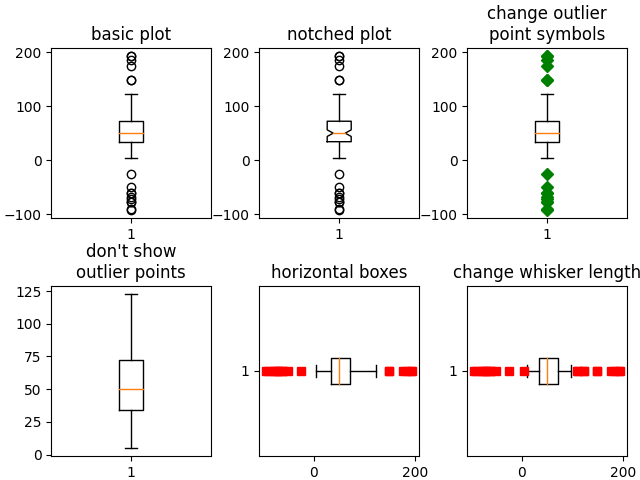
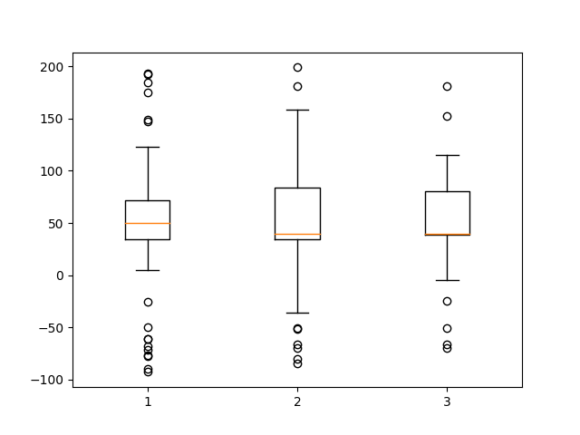

Note
Click here to download the full example code
Boxplots¶
Visualizing boxplots with matplotlib.
The following examples show off how to visualize boxplots with Matplotlib. There are many options to control their appearance and the statistics that they use to summarize the data.
import matplotlib.pyplot as plt
import numpy as np
from matplotlib.patches import Polygon
# Fixing random state for reproducibility
np.random.seed(19680801)
# fake up some data
spread = np.random.rand(50) * 100
center = np.ones(25) * 50
flier_high = np.random.rand(10) * 100 + 100
flier_low = np.random.rand(10) * -100
data = np.concatenate((spread, center, flier_high, flier_low))
fig, axs = plt.subplots(2, 3)
# basic plot
axs[0, 0].boxplot(data)
axs[0, 0].set_title('basic plot')
# notched plot
axs[0, 1].boxplot(data, 1)
axs[0, 1].set_title('notched plot')
# change outlier point symbols
axs[0, 2].boxplot(data, 0, 'gD')
axs[0, 2].set_title('change outlier\npoint symbols')
# don't show outlier points
axs[1, 0].boxplot(data, 0, '')
axs[1, 0].set_title("don't show\noutlier points")
# horizontal boxes
axs[1, 1].boxplot(data, 0, 'rs', 0)
axs[1, 1].set_title('horizontal boxes')
# change whisker length
axs[1, 2].boxplot(data, 0, 'rs', 0, 0.75)
axs[1, 2].set_title('change whisker length')
fig.subplots_adjust(left=0.08, right=0.98, bottom=0.05, top=0.9,
hspace=0.4, wspace=0.3)
# fake up some more data
spread = np.random.rand(50) * 100
center = np.ones(25) * 40
flier_high = np.random.rand(10) * 100 + 100
flier_low = np.random.rand(10) * -100
d2 = np.concatenate((spread, center, flier_high, flier_low))
# Making a 2-D array only works if all the columns are the
# same length. If they are not, then use a list instead.
# This is actually more efficient because boxplot converts
# a 2-D array into a list of vectors internally anyway.
data = [data, d2, d2[::2]]
# Multiple box plots on one Axes
fig, ax = plt.subplots()
ax.boxplot(data)
plt.show()
- 
- 
Below we'll generate data from five different probability distributions, each with different characteristics. We want to play with how an IID bootstrap resample of the data preserves the distributional properties of the original sample, and a boxplot is one visual tool to make this assessment
random_dists = ['Normal(1, 1)', 'Lognormal(1, 1)', 'Exp(1)', 'Gumbel(6, 4)',
'Triangular(2, 9, 11)']
N = 500
norm = np.random.normal(1, 1, N)
logn = np.random.lognormal(1, 1, N)
expo = np.random.exponential(1, N)
gumb = np.random.gumbel(6, 4, N)
tria = np.random.triangular(2, 9, 11, N)
# Generate some random indices that we'll use to resample the original data
# arrays. For code brevity, just use the same random indices for each array
bootstrap_indices = np.random.randint(0, N, N)
data = [
norm, norm[bootstrap_indices],
logn, logn[bootstrap_indices],
expo, expo[bootstrap_indices],
gumb, gumb[bootstrap_indices],
tria, tria[bootstrap_indices],
]
fig, ax1 = plt.subplots(figsize=(10, 6))
fig.canvas.manager.set_window_title('A Boxplot Example')
fig.subplots_adjust(left=0.075, right=0.95, top=0.9, bottom=0.25)
bp = ax1.boxplot(data, notch=0, sym='+', vert=1, whis=1.5)
plt.setp(bp['boxes'], color='black')
plt.setp(bp['whiskers'], color='black')
plt.setp(bp['fliers'], color='red', marker='+')
# Add a horizontal grid to the plot, but make it very light in color
# so we can use it for reading data values but not be distracting
ax1.yaxis.grid(True, linestyle='-', which='major', color='lightgrey',
alpha=0.5)
ax1.set(
axisbelow=True, # Hide the grid behind plot objects
title='Comparison of IID Bootstrap Resampling Across Five Distributions',
xlabel='Distribution',
ylabel='Value',
)
# Now fill the boxes with desired colors
box_colors = ['darkkhaki', 'royalblue']
num_boxes = len(data)
medians = np.empty(num_boxes)
for i in range(num_boxes):
box = bp['boxes'][i]
box_x = []
box_y = []
for j in range(5):
box_x.append(box.get_xdata()[j])
box_y.append(box.get_ydata()[j])
box_coords = np.column_stack([box_x, box_y])
# Alternate between Dark Khaki and Royal Blue
ax1.add_patch(Polygon(box_coords, facecolor=box_colors[i % 2]))
# Now draw the median lines back over what we just filled in
med = bp['medians'][i]
median_x = []
median_y = []
for j in range(2):
median_x.append(med.get_xdata()[j])
median_y.append(med.get_ydata()[j])
ax1.plot(median_x, median_y, 'k')
medians[i] = median_y[0]
# Finally, overplot the sample averages, with horizontal alignment
# in the center of each box
ax1.plot(np.average(med.get_xdata()), np.average(data[i]),
color='w', marker='*', markeredgecolor='k')
# Set the axes ranges and axes labels
ax1.set_xlim(0.5, num_boxes + 0.5)
top = 40
bottom = -5
ax1.set_ylim(bottom, top)
ax1.set_xticklabels(np.repeat(random_dists, 2),
rotation=45, fontsize=8)
# Due to the Y-axis scale being different across samples, it can be
# hard to compare differences in medians across the samples. Add upper
# X-axis tick labels with the sample medians to aid in comparison
# (just use two decimal places of precision)
pos = np.arange(num_boxes) + 1
upper_labels = [str(round(s, 2)) for s in medians]
weights = ['bold', 'semibold']
for tick, label in zip(range(num_boxes), ax1.get_xticklabels()):
k = tick % 2
ax1.text(pos[tick], .95, upper_labels[tick],
transform=ax1.get_xaxis_transform(),
horizontalalignment='center', size='x-small',
weight=weights[k], color=box_colors[k])
# Finally, add a basic legend
fig.text(0.80, 0.08, f'{N} Random Numbers',
backgroundcolor=box_colors[0], color='black', weight='roman',
size='x-small')
fig.text(0.80, 0.045, 'IID Bootstrap Resample',
backgroundcolor=box_colors[1],
color='white', weight='roman', size='x-small')
fig.text(0.80, 0.015, '*', color='white', backgroundcolor='silver',
weight='roman', size='medium')
fig.text(0.815, 0.013, ' Average Value', color='black', weight='roman',
size='x-small')
plt.show()
Here we write a custom function to bootstrap confidence intervals. We can then use the boxplot along with this function to show these intervals.
def fake_bootstrapper(n):
"""
This is just a placeholder for the user's method of
bootstrapping the median and its confidence intervals.
Returns an arbitrary median and confidence interval packed into a tuple.
"""
if n == 1:
med = 0.1
ci = (-0.25, 0.25)
else:
med = 0.2
ci = (-0.35, 0.50)
return med, ci
inc = 0.1
e1 = np.random.normal(0, 1, size=500)
e2 = np.random.normal(0, 1, size=500)
e3 = np.random.normal(0, 1 + inc, size=500)
e4 = np.random.normal(0, 1 + 2*inc, size=500)
treatments = [e1, e2, e3, e4]
med1, ci1 = fake_bootstrapper(1)
med2, ci2 = fake_bootstrapper(2)
medians = [None, None, med1, med2]
conf_intervals = [None, None, ci1, ci2]
fig, ax = plt.subplots()
pos = np.arange(len(treatments)) + 1
bp = ax.boxplot(treatments, sym='k+', positions=pos,
notch=1, bootstrap=5000,
usermedians=medians,
conf_intervals=conf_intervals)
ax.set_xlabel('treatment')
ax.set_ylabel('response')
plt.setp(bp['whiskers'], color='k', linestyle='-')
plt.setp(bp['fliers'], markersize=3.0)
plt.show()
References
The use of the following functions, methods, classes and modules is shown in this example:
Total running time of the script: ( 0 minutes 2.433 seconds)
Keywords: matplotlib code example, codex, python plot, pyplot Gallery generated by Sphinx-Gallery